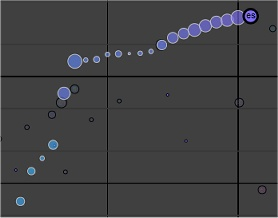
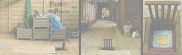
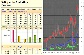

This page shows a selection of stunning visualizations based on Wikimedia content, found on the web. All are eye candy. Many marvel at the sheer size of Wikipedia. Some excel in providing new insights. Judge for yourself. Also notice how circles are really en vogue with visualizers :-) Unless stated otherwise none of the web sites is affiliated with or endorsed by the Wikimedia Foundation. IBM: History Flow
IBM: Chromogram
Tod Holloway: The 'Power Struggle' in Wikipedia
Yonathan Feinberg: WordleThis chart is based on the full text of the English Wikipedia article on Barack Obama (19 June 2009 18:06 GMT) The size of a word in the visualization is proportional to the number of times the word appears in the input text. Any text can function as input. Author of Wordle: Yonathan Feinberg (2009) - Credits - Web Site
László Kozma: WikipediaVision
Will Muto: The WIKIPEDIA Effect 2.0
Quote: "Using Processing, I am traversing a mere fraction of Wikipedia's massive link structure and creating maps in 3D space. This is a work in progress." Author: Will Muto (2007) - Web Site
Chris Harrison: Top 50 visited articles on English Wikipedia
Chris Harrison: Clusterball
Myshkin Ingawale : Wikipedia Article Network
eyePlorer.com : The Graphical Knowledge Engine
Simon le Bon : Language Development on Wikipedia
Moritz Stefaner • Dario Taraborelli • Giovanni Luca Ciampaglia:
| ||||||||||||||||||||||||||||||||||||||||||||


|
Each time a user joins an AfD discussion and recommends to keep, merge, or redirect the article a green segment leaning towards the left is added.
Each time a user recommends to delete the article a red segment leaning towards the right is added. As the discussion progresses, the length of the segments as well as the angle slowly decay.
Authors: Dario Taraborelli, Giovanni Luca Ciampaglia (data and analysis) and Moritz Stefaner (visualization). |
JESS3 & William Beutler: The State of Wikipedia

|
A digital creative shop called JESS3 (focussing on branding, animation, data viz) released their visual 'case study' about Wikipedia.
Produced by: JESS3 (visualization), William Beutler (story line) and Jimmy Wales (narration). |
Erik Zachte: Animated Growth of Wikimedia Projects
|
 2002: Spanish Wikipedia 'forks', rebirth follows. |
Animation shows how wikis grow over the years. X axis shows age of wiki. Y axis shows number of articles. Radius of circles shows number of editors. Color shows average size of articles. Animation requires Firefox 3 (html 5 canvas). Here is prerecorded flash version. Author: Erik Zachte (2008) - Web Site |
|  |
|
 | ||||